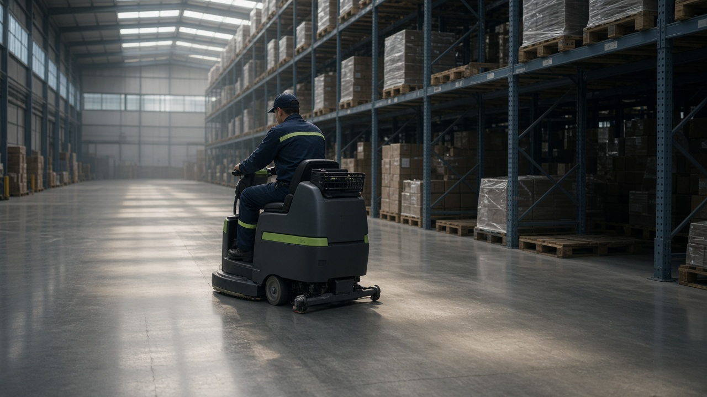
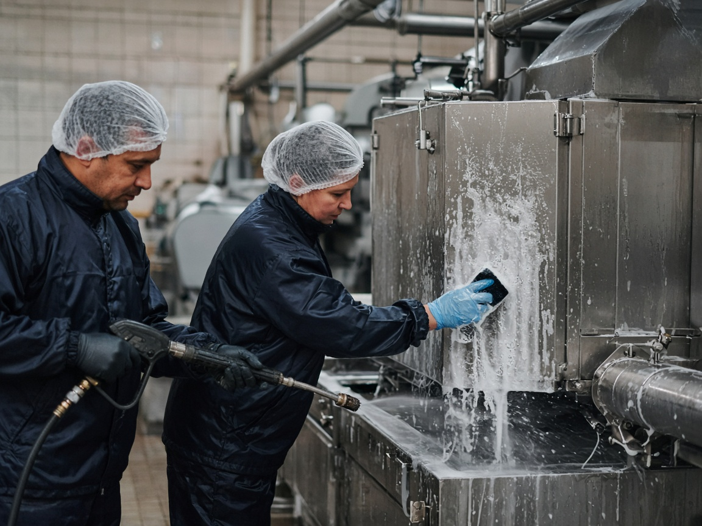
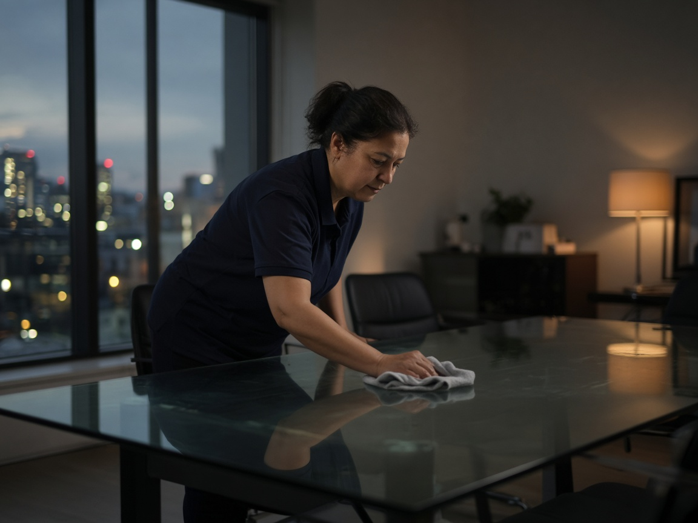
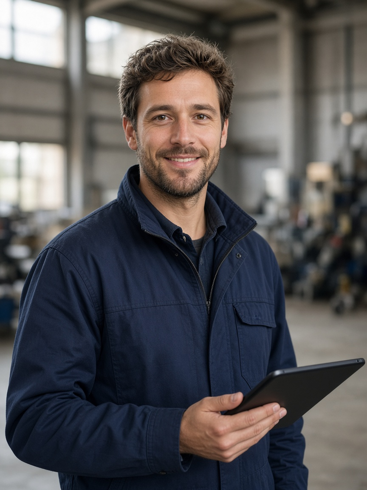

Logistiek & magazijn
- Vloeren schrobzuigen, ook tijdens shifts
- Laadkades, kantines en sanitair
- Flexibel mee met piekperiodes
Industriële schoonmaak · België
Wij plaatsen opgeleide, vaste schoonmakers in uw magazijn, productiehal of kantoor. U krijgt één aanspreekpunt. Wij regelen de rest.
Hoe het werkt
U vertelt ons online wat, waar en wanneer. Geen verplichtingen.
Uw vaste aanspreekpunt komt langs, bekijkt de site en stelt een plan op maat op.
Geselecteerde, opgeleide schoonmakers in V Clean-uniform, ingewerkt op uw veiligheidsregels.
Uw aanspreekpunt bewaakt de kwaliteit. Onze AI-opvolging signaleert afwezigheden en vragen meteen.
Sectoren



Onze beloftes
Altijd dezelfde persoon. Geen callcenter.
Op elke vraag, gevolgd door onze AI-opvolging.
Bij afwezigheid plannen wij een ingewerkte vervanger.
Op maat van uw site, zonder verrassingen.
Klantenreviews en referenties volgen na de eerste projecten. [placeholder — geen verzonnen reviews]
Waarom V Clean
Dezelfde ploeg leert uw site kennen. Dat ziet u aan het resultaat.
Ziek of verlof? Wij zorgen voor een ingewerkte vervanger.
Wij nemen contracten, loon en verzekering voor onze rekening.
Ingewerkt op uw site- en veiligheidsregels vóór de eerste shift.
Meer handen in de piek, minder als het rustig is.

Eén aanspreekpunt
U belt of mailt altijd dezelfde persoon: [Naam aanspreekpunt]. Achter de schermen houdt onze AI-opvolging elke afspraak, afwezigheid en vraag bij, zodat er niets tussen de mazen glipt.
Clément Gryp & David [achternaam] — oprichters
Onboarding
Ja. V Clean neemt contract, loon, verzekering en administratie voor zijn rekening. U heeft er geen werk aan.
Wij plannen een vervanger in die vooraf op uw site is ingewerkt. Onze AI-opvolging verwittigt ons meteen.
Dat hangt af van uw site en de ploeggrootte. Na het plaatsbezoek krijgt u een concrete startdatum.
Elke site is anders. Na het plaatsbezoek krijgt u een duidelijke offerte op maat, zonder verrassingen.
Ja, we plannen mee met uw shifts.
[Regio's bevestigen — placeholder]